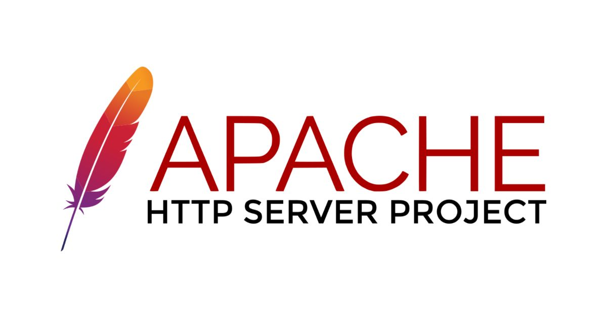

AI 단신 HELLO, HUMAN! / BRIEF 15
Apache HTTP Server,
원격 코드 실행 취약점 수정…
HTTP/2 사용 서버 점검 필요
2.4.71에서 보안 취약점 3건을 수정했습니다.
HTTP/2를 활성화한 운영 환경은 우선 확인해야 합니다.

Apache HTTP Server 프로젝트가 11월 11일 2.4.71 보안 업데이트를 공개해 취약점 3건을 수정했습니다. 가장 주의할 문제는 HTTP/2 처리 과정에서 발생하는 원격 코드 실행(RCE) 취약점입니다. 공격자가 인증 절차 없이 서버에서 코드를 실행할 수 있어, Apache는 이를 Critical 등급으로 분류했습니다. Apache 보안 공지 ↗ Red Hat의 영향 설명 ↗
무엇이 문제인가
핵심 취약점은 CVE-2026-119618입니다. HTTP/2 모듈인 mod_http2가 여러 요청을 동시에 처리할 때, 한 작업이 다른 작업의 메모리를 잘못 바꿀 수 있는 문제입니다. 공격자가 이 오류를 악용하면 웹서버 프로세스에 부여된 권한으로 코드를 실행할 수 있습니다. Red Hat 취약점 설명 ↗
Apache가 배포한 원본 기준으로 2.4.55~2.4.70에서 HTTP/2를 활성화한 서버가 영향을 받습니다. HTTP/1.1만 제공하는 서버는 이 RCE 취약점의 영향을 받지 않습니다. 다만 함께 수정된 나머지 두 취약점은 별도로 확인해야 합니다. Apache 영향 버전 ↗ HTTP/2 활성화 조건 ↗
| 취약점 | 등급 | 영향 버전 | 주요 문제 |
|---|---|---|---|
| CVE-2026-119618 | Critical | 2.4.55~2.4.70 | mod_http2메모리 손상 및 원격 코드 실행 |
| CVE-2026-106023 | Important | 2.4.30~2.4.70 | mod_mdNULL 포인터 참조로 자식 프로세스 비정상 종료 |
| CVE-2026-109163 | Low | 2.4.69~2.4.70 | mod_vhost_alias스택 버퍼 범위 밖 1바이트 쓰기 |
작은 화면에서는 표를 좌우로 밀어 볼 수 있습니다. 배포판별 영향 여부와 등급은 해당 공급업체 공지를 확인하세요.
이번 공지는 웹서버인 httpd에 관한 내용입니다. Tomcat만 업데이트하는 것은 이번 취약점에 대한 조치가 아닙니다. KISA 보안 공지 ↗
운영팀이 확인할 세 가지
-
Apache httpd 사용 여부와 HTTP/2 설정
mod_http2가 설치돼 있는지만으로는 판단할 수 없습니다. 실행 중인 서버가 이 모듈을 불러오는지,Protocols설정에 HTTP/2를 뜻하는h2또는h2c가 포함돼 있는지 확인해야 합니다. Red Hat 점검 안내 ↗HTTP/2 모듈을 GitHub의
mod_h2배포본으로 따로 설치했다면 모듈 버전도 확인해야 합니다. Apache가 공지한 영향 범위는 2.0.8~2.0.42입니다. 이 경우에는httpd의 버전만 보고 조치가 끝났다고 판단해서는 안 됩니다. 별도 모듈의 영향 버전 ↗ -
설치 방식에 맞는 보안 업데이트
Apache 배포본을 직접 설치했다면 2.4.71 이상으로 업데이트해야 합니다. 운영체제 패키지로 설치했다면 해당 배포판의 보안 공지에 따라
httpd와 HTTP/2 모듈의 수정 패키지를 확인해 적용해야 합니다. Apache 수정 버전 ↗ Red Hat 패키지 안내 ↗배포판은 기존 버전에 보안 수정만 반영하는 백포트를 사용하기도 합니다. 따라서 표시된 버전 번호만으로 판단하지 말고, 해당 취약점의 수정이 설치된 패키지에 반영됐는지 확인해야 합니다. Red Hat 백포트 정책 ↗
Red Hat Enterprise Linux(RHEL)도 제품별 차이가 있습니다. Red Hat 제공 패키지 기준으로 RHEL 8 이하는 이번 RCE의 영향을 받지 않지만, RHEL 9·10은 영향을 받으며 등급은 Important입니다. 등급이 달라도 영향받는 패키지는 업데이트해야 합니다. 제품별 영향과 등급 ↗
-
즉시 패치가 어렵다면 HTTP/2 비활성화 검토
패치 전까지 HTTP/2를 끄고 HTTP/1.1만 제공하도록 바꾸는 방법을 검토할 수 있습니다. 성능 등 서비스에 미칠 영향을 먼저 살펴보고, 설정을 바꾼 뒤에는
httpd를 재시작해 HTTP/2가 실제로 꺼졌는지 확인해야 합니다. 이 조치는 해당 RCE에 대한 임시 완화책이며, 나머지 두 취약점을 해결하지는 않습니다. Red Hat 임시 완화 안내 ↗
Anthropic과 Google이 보고한 취약점
Apache는 핵심 RCE의 발견자로 Anthropic의 OSS Scanner와 Google Cloud Vulnerability Research 연구진(Anthony Weems·Simon Scannell)을 명시했습니다. Apache 보안팀에 보고한 날짜는 Anthropic이 10월 26일, Google이 11월 3일입니다. Apache 발견·보고 기록 ↗
원문과 확인 자료
APACHE HTTP SERVER · 2026. 11. 11 2.4.71에서 수정한 보안 취약점과 발견·보고 기록 공식 공지 읽기- KISA 보호나라 · Apache 제품 보안 업데이트 권고 · 2026. 11. 12 · 한국어
- Red Hat · CVE-2026-119618의 원인, 영향 조건과 제품별 차이
- Red Hat · 점검 항목과 임시 완화 절차
- Red Hat · 기존 버전에 보안 수정을 적용하는 백포트 정책
2026년 11월 13일(한국시간), 위 공식 자료를 대조했습니다. 취약점 악용이나 패치 효과를 직접 재현하지 않았으며, 개별 운영 서버의 영향 여부를 점검한 결과는 아닙니다. ‘헬로우 휴먼의 시선’은 자료를 바탕으로 정리한 운영 관점입니다.
AI뉴스 목록으로 돌아가기